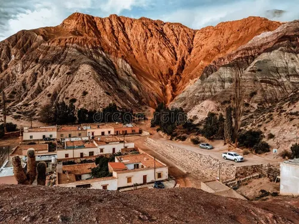
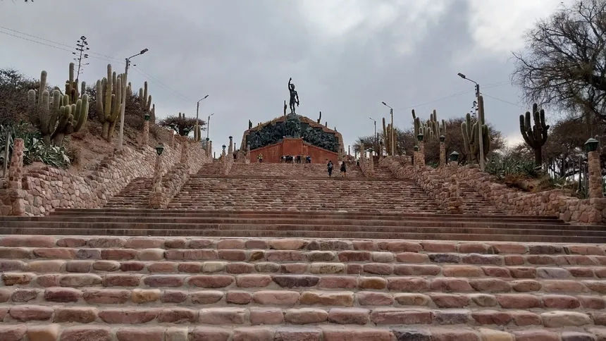
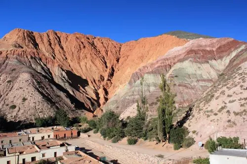

Lugares mas visitados
Lugares preferidos de la gente

Purmamarca
Purmamarca es un pequeño pueblo ubicado en la provincia de Jujuy, en el noroeste de Argentina. Se encuentra a unos 2.300 metros sobre el nivel del mar
Además del Cerro de los Siete Colores, Purmamarca ofrece otras atracciones como la Iglesia de Santa Rosa de Lima, construida en el siglo XVII, y el Paseo de los Colorados.

Las Salinas
Las Salinas son un conjunto de salares ubicados en la provincia de Jujuy, en el noroeste de Argentina. Son conocidas por su paisaje único y su belleza natural.
Las salinas se formaron hace millones de años a partir de la evaporación de antiguos lagos que quedaron atrapados en la región.

Quebrada de Humahuaca
La Quebrada de Humahuaca es una región natural y cultural ubicada en la provincia de Jujuy, declarada Patrimonio de la Humanidad por la UNESCO en 2003.
Humahuaca es uno de los asentamientos más antiguos del norte argentino, con un papel importante en las guerras por la independencia argentina.

Termas de Reyes
Las Termas de Reyes son un conjunto de termas naturales ubicadas en la provincia de Jujuy. Son conocidas por su belleza natural y sus propiedades terapéuticas.
La temperatura del agua varía entre 38 y 42 grados Celsius, lo que las hace ideales para el baño termal.
200
Turistas visitaron nuestros destinos
120
Recomendaciones de viajeros
40
Experiencias compartidas
Juan Perez
Lugar al que viajo: Termas de reyes
Me encantó este lugar, es increíblemente hermoso y la gente es muy amable.
Maria Gomez
Lugar al que viajo: Cerro de 7 colores
Una experiencia inolvidable, definitivamente volveré a visitar este lugar.

Carlos Rodriguez
Lugar al que viajo: Las Salinas
Las vistas son impresionantes, especialmente al atardecer.